El Sol
¿Qué es el Sol?
El llamado “astro rey” es el centro del sistema solar en el que se encuentra la Tierra. Es el responsable de proveer luz, calor y energía a los seres vivos. Es, desde esta perspectiva, el motor de la existencia en el planeta de la vida y el generador de los climas en otros planetas. En realidad, el Sol es una estrella más en el vasto e insondable universo. Únicamente es esencial para el sistema solar en el que la Tierra se circunscribe. Sin embargo, es la estrella más grande de este sistema y posee características que lo hacen muy complejo e interesante. Es tan grande que representa poco más del 99 por ciento de la masa total del Sistema Solar. Se encuentra a unos 150 millones de kilómetros de la Tierra y consiste en una esfera llena de gases calientes, principalmente hidrógeno y helio. Se formó hace unos 4,567 millones de años como consecuencia de un colapso gravitatorio a partir de una nube molecular. Los científicos creen que la mitad del hidrógeno de su núcleo se ha agotado, y que continuará como estrella unos 5,500 millones de años más. Después se expandirá hasta convertirse en una gigante roja y posiblemente se “tragará” a la Tierra y a los otros planetas. Su estado como gigante roja tendrá una duración de miles de millones de años hasta que finalmente quedará como una enana blanca. Pero para esto faltan millones de años todavía, ¡afortunadamente!¿Cuáles son las partes del Sol?
Núcleo
El núcleo del Sol es la parte más caliente de todas pues su temperatura supera los 15.7 millones de grados centígrados. Es aquí donde las reacciones de fusión nuclear tienen lugar al convertirse el hidrógeno en helio y liberar energía. Entonces los fotones (partículas de luz) llevan la energía a la zona convectiva y posteriormente la energía se transfiere a la superficie.
Durante 1 segundo de fusión nuclear se libera una cantidad de energía superior a la que libera la explosión de cientos de miles de bombas de hidrógeno.
Zona radiante o radiativa.
Es la zona que rodea al núcleo y comprende el 45 por ciento de su radio. El calor es menos intenso que en el núcleo y es aquí donde se lleva a cabo la radiación térmica, el proceso de transferencia de energía desde el núcleo.
Zona de transición (tacoclina)
Es la capa que separa la zona radiante y la zona convectiva. Es resultado de la rotación diferencial del Sol. Una hipótesis sugiere que el campo magnético del sol es generado por un dínamo magnético dentro de esta zona.
Zona convectiva
Es la capa superior del interior solar, se extiende a unos 200,000 kilómetros por debajo de la superficie del Sol. Aquí los movimientos de los gases y las burbujas de plasma caliente se mueven hacia arriba, por lo que se transfiere energía a la superficie.
Fotosfera
Es la superficie visible del Sol. De hecho, la luz solar proviene principalmente de ésta.
Manchas solares
Aparecen cuando la superficie solar experimenta alguna perturbación y entre los resquicios de la granulación solar se originan unos puntos llamados poros que se multiplican. La ampliación de los poros origina las manchas solares, que son básicamente zonas oscuras formadas por un núcleo oscuro rodeado de una aureola grisácea.
En las manchas solares ocurren movimientos de materia y están vinculadas con explosiones de gas y radioemisiones.
Prominencia solar
Es una forma gaseosa y brillante que se extiende desde la superficie solar hacia el exterior.
Atmósfera
Es la zona que se encuentra sobre la fotosfera.
Cromosfera
Se estima que tiene un espesor de 10,000 kilómetros y está compuesta por espículas (lenguas de gas). Es sede de fenómenos importantes.
Corona solar
Se vislumbra como una aureola plateada y tenue alrededor del disco solar, compuesta por polvo, electrones e iones.
Protuberancias solares
Son chorros de gas que son proyectados desde la cromosfera hacia el exterior. Están presentes en todas partes de la atmósfera.
Región de transición solar
Es la región entre la cromosfera y la corona solar. El calor fluye desde la corona y produce esta zona en la cual la temperatura cambia rápidamente.
 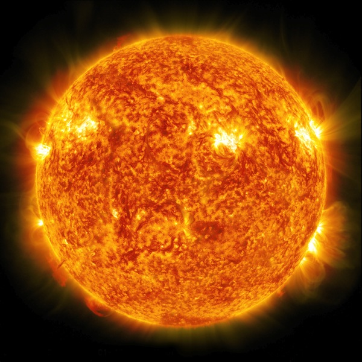
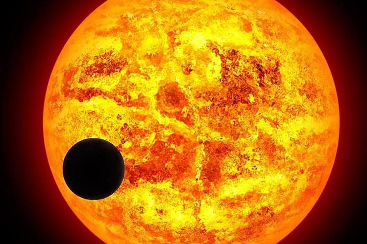
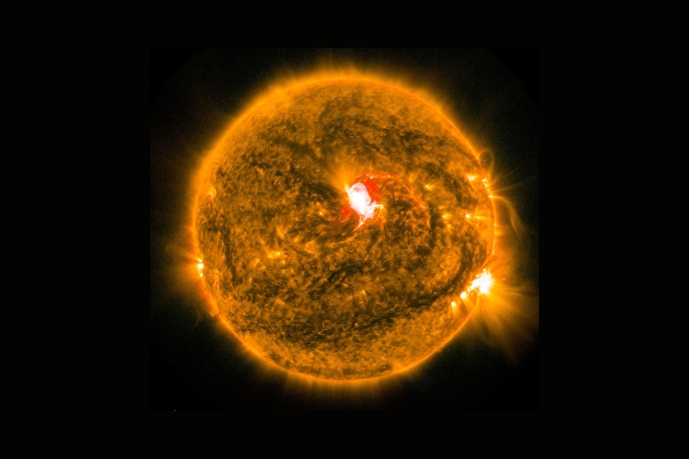
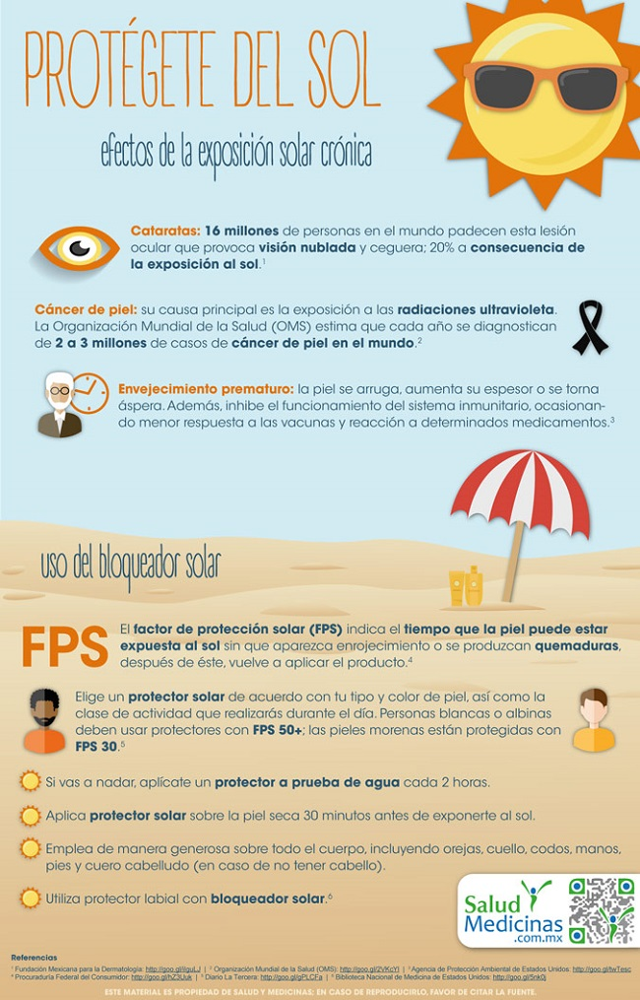
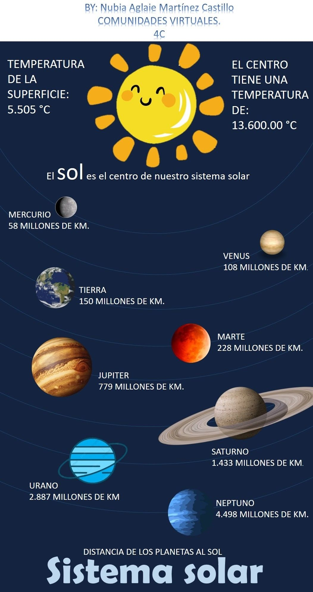
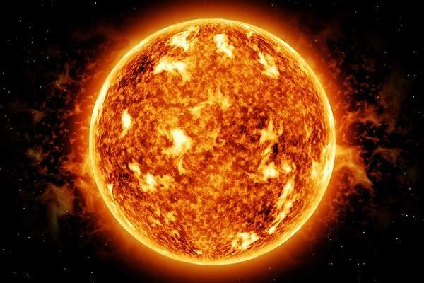
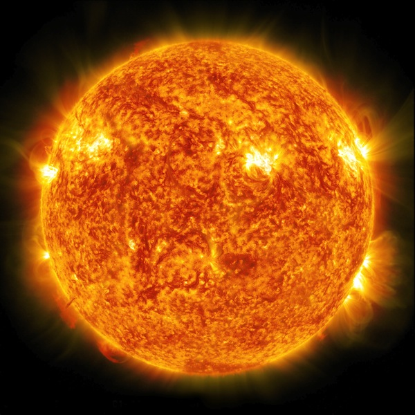
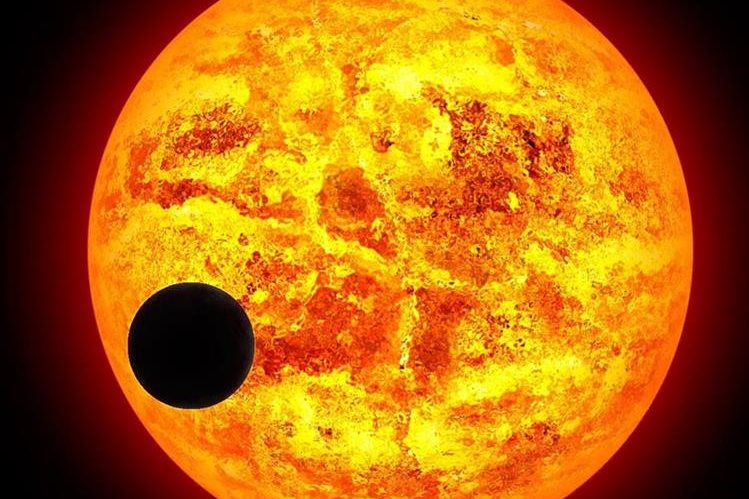
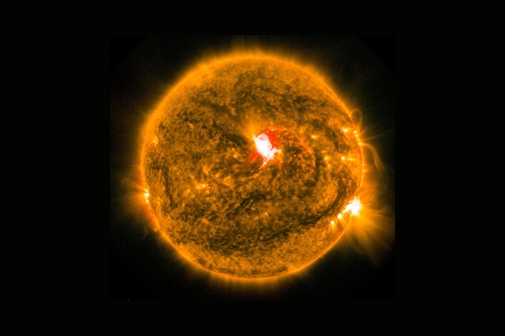
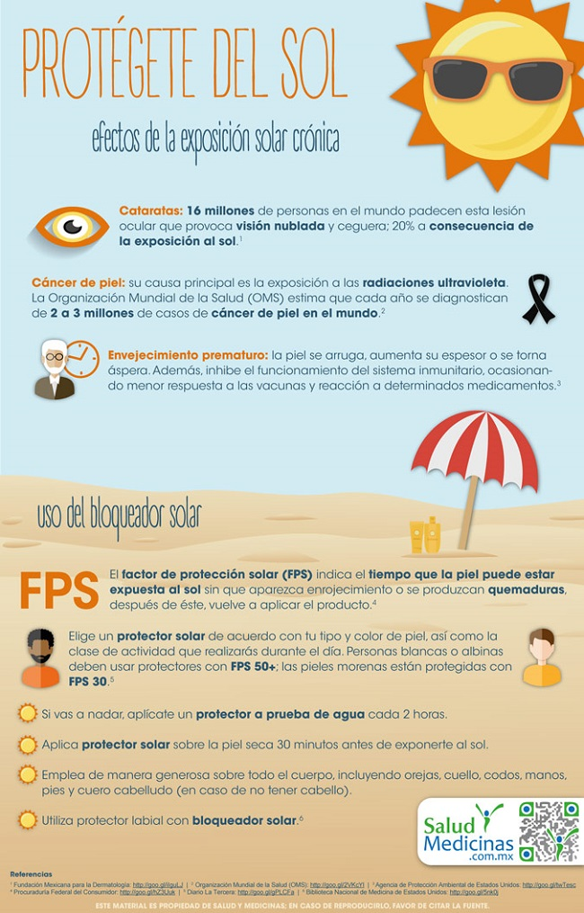
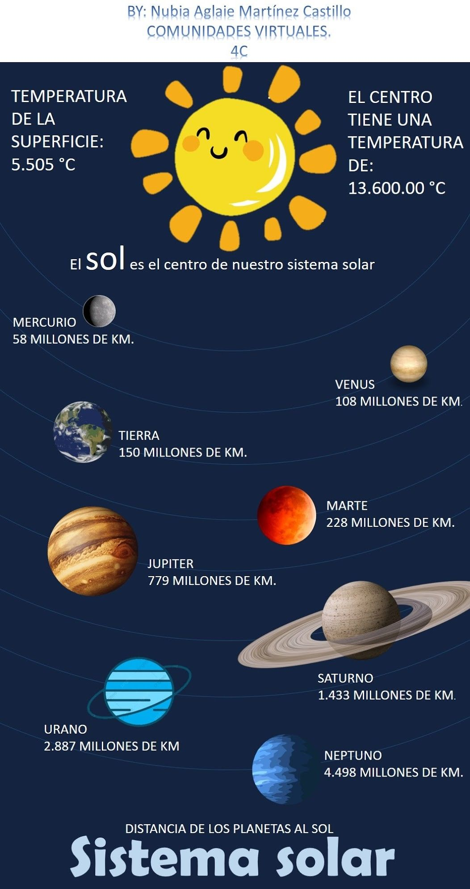
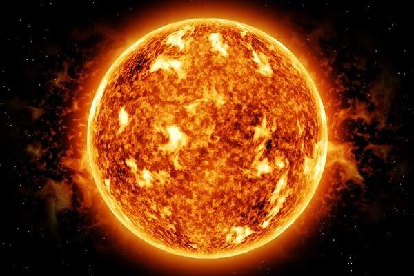